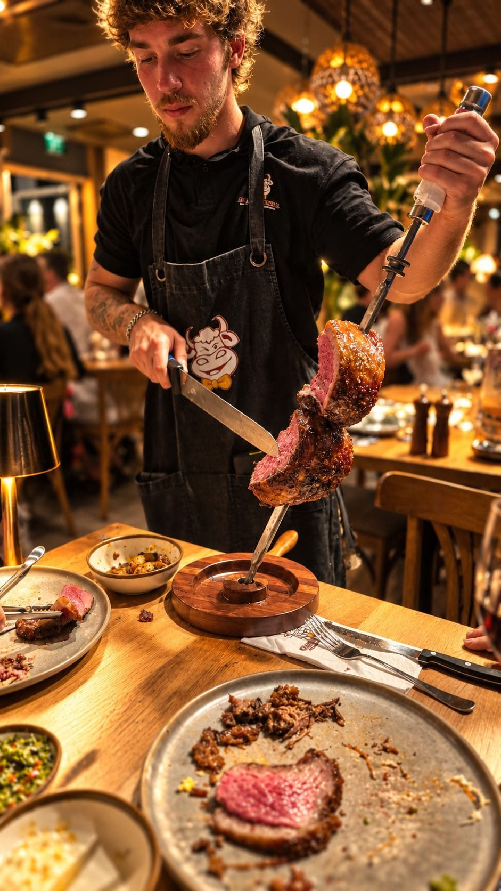

מסעדה מומלצת אילת- בריקוד הסמבה...

כאשר אתם הולכים לבקר בכפר דרוזי, מלבד הפיתה הדרוזית עם הלבנה, אתם גם מצפים לאווירה מיוחדת במינה, שתכניס אתכם לא רק למטבח הדרוזי אלא לאווירה כללית של דרוזים. כפר, תרבות, מסורת ועוד. זה מה שיפה כאשר פוגשים במטבחים שונים בעולם. אנחנו זוכים להציץ לא רק במטבח שלהם, אלא שהוא מייצג את ההיסטוריה שלהם, את העמים שהיו בו קודם ושכל אחד מהם השאיר שם איזה מאכל משלו וכך בעצם נוצר מטבח אותנטי.
אם תשאלו על מסעדה מומלצת באילת - נאמר לכם מסעדה ברזילאית וזה רק משום שיש בה את הכל מלבד זה שהיא נמצאת באילת. מדובר על מטבח אותנטי עם האווירה הנכונה, כזה שלא עושה הצגה אלא מגיש להם את השיפוד הארוך הצ'ורוסקוריה עם 11 נתחי בשר מכל מיני סוגים מכל הלב: אסאדו עגל, פיקאניה, שוק טלה, מאמיה מלכת הבשר, כבד עוף, כנפי עוף בצ'ילי, בוליניו שהן קציצות בשר ברזילאיות, לבבות במרינדה של יין אדום ואיך אפשר בלי נקניקיות צו'ריסו דרום אמריקאיות.
מה זה אומר מטבח ברזילאי?
מנהל של מסעדת בשרים , מסעדה מומלצת באילת מסביר כי מטבח ברזילאי הוא ערב רב של סגנונות בישול מאזורים שונים ומגוונים בברזיל. גם האוכלוסייה במדינה זו מורכבת מקבוצות אתניות שלכל אחת מהן יש את המטבח המיוחד שלה. מדובר על פורטוגלים, אינדיאנים, אפריקנים, ספרדים, איטלקים, גרמנים, אסייתיים וגם סורים ולבנונים שאבות אבותיהם הגיעו מתי שהוא לברזיל. גם במטבח שלהם מעורבבים תבלינים, רטבים, ומנות מכל מיני מקורות אתניים שונים.
יש בברזיל חמישה אזורי בישול שונים זה מזה: צפון, צפון מזרח, מרכז מערב, דרום מזרח, דרום. גם הרגלי האכילה ונימוסי השולחן שונים ממקום למקום וגם המשקאות.
הצפון כולל את האזורים: אמזואנס, אמאפה, אקרי, טוקנטינס, פארה, רונדוניה רוריימה. זהו אזור המכונה גם אמזוניה ובו נמצא חלק גדול מיער הגשם המיושב על ידי אנשים פורטוגזים או אינדיאניים. הם ניזונים מפירות, דקלים, דגים ובוטנים.
המנות באזור הזה עשויות מהמצרכים המקומיים ואפילו יש מנה שעשויה מבשר אליגטור פקדינו דה זאקרה.
בשר בברזיל זה פולחן
כאשר תבקרו באיזו מסעדה מומלצת באילת תוכלו להבין כי שיטות הצלייה במקום מנסות לשחזר את שיטות האכילה של הגאוצ'וס, רועי העדרים. את הבקר הביאו לברזיל מהגרים ורעו אותם בני המקום שהיו שומרים על העדרים יום ולילה וגם לנים בשטח. ומה היה להם לאכול? בקר. אז הם היו מכינים שיפוד ומכינים בשר צלוי. את השיטות של אכילת הבשר כמו של הגאוצ'וס משמרים היום גם כטקס כאשר מבקרים במסעדה ברזילאית באילת. לא מדובר רק על אוכל, מדובר על חוויה כוללת של ביקור והרגשה שנמצאים בריו דה ז'נרו שנמצאים רחוק ושמבלים בברזיל ממש. וזה הקסם שלה.
בברזיל אוכלים ושותים מנות מסוימות בשעות מוגדרות והברזילאים מאוד דבקים בסדר האוכל שלהם. הוא מאופיין בניקיון ובאסתטיקה גבוהים ורואים את זה גם במסעדה הברזילאית. בדרך כלל את הבשר אוכלים בצהריים עם נזיד של פייז'או- שעועית שחורה אותה עושים בכל מיני שיטות. השתייה היא בדרך כלל בירה לרוב בהירה ועדינה מאוד.
ים, כיף, ובשר
מסעדות באילת זה הכי שווה שיש, כמובן כאשר מדברים על אילת היא עיר נופש והיא מציעה אתרים ואטרקציות שונים שכל כולם סובבים סביב הים, החופים, תחושת המרחב והחופש- מאוד מזכיר את ברזיל. היה זה אך טבעי שתהיה מסעדה מומלצת באילת שהיא מהמטבח הברזילאי כי אין שום דבר שיותר קרוב לברזיל מאילת.